금형기능사 (2002-01-27 기출문제)
1과목: 임의구분
1. 다음 중 분할다이의 장점과 관계가 가장 없는 것은?
- 기계가공이 쉽다.
- 열처리 변형이 작다.
- 파손시 교환이 용이하다.
- 금형이 간소화되므로 작게 만들 수 있다.
(정답률: 69%)

2. 분할 다이의 분할 방법 중 가장 나쁜 곳은?
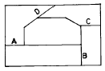
- A면
- B면
- C면
- D면
(정답률: 69%)
3. 굽힘가공시 소재에 발생하는 인장 및 압축은 소재의 표면에서 가장 크고 중심에 접근 할 수록 작아진다. 인장과 수축이 생기지 않는 면을 무엇이라 하는가?
- 굽힘면
- 중립면
- 인장면
- 압축면
(정답률: 74%)
4. 기계식 프레스에서 구조상 프레스 작업을 안전하게 할 수있는 최대압력을 공칭 압력이라 하며 이 위치를 표시하는 방법으로, 하사점으로부터 떨어진 거리를 mm로 나타낸다. 이것을 무엇이라 하는가?
- 토크(torque)능력
- 하중 능력
- 일 능력
- 크랭크 능력
(정답률: 66%)
5. 금형의 설치에서 프레스의 점검 사항이 아닌 것은?
- 안전 장치의 작동 상태
- 클러치의 작동 상태
- 이젝터의 작동상태
- 램과 생크 고정 볼트 체결 상태
(정답률: 42%)
6. 다음 중 재료의 소성을 이용한 가공법이 아닌 것은?
- 주조
- 단조
- 굽힘
- 전단
(정답률: 66%)
7. 소재 두께 1㎜인 연강판으로 안지름 40㎜의 플랜지 없는 원형 컵을 드로잉 하고자 할 때 필요한 블랭크의 지름은? (단, 드로잉률은 0.5로 한다.)
- 75㎜
- 80㎜
- 85㎜
- 90㎜
(정답률: 67%)
8. 프레스에서 가공할 소재를 연속적으로 이송 시키면서 여러 단계의 공정을 거쳐 하나의 제품으로 가공하는 금형을 무엇이라고 하는가?
- 순차 이송(progressive) 금형
- 콤파운드(compound) 금형
- 드로잉(drawing) 금형
- 블랭킹(blanking) 금형
(정답률: 83%)
9. 재결정온도 이상에서 압축가공하는 것으로 옳은 것은?
- 냉간가공
- 열간가공
- 절삭가공
- 연삭가공
(정답률: 71%)
10. 프레스가공에서 전단면에 가장 크게 영향을 주는 것은?
- 윤활유
- 클리어런스
- 전단력
- 프레스 중량
(정답률: 54%)
11. 사출성형품의 중앙에 설치하는 원형의 제한 게이트는 어느 것인가?
- 핀포인트 게이트
- 링 게이트
- 다이렉트 게이트
- 팬 게이트
(정답률: 57%)
12. 성형품을 제작하기 위한 유동길이에 영향을 미치는 요인이 아닌 것은?
- 성형품의 이젝터 방식과 크기
- 성형품의 형상과 두께
- 수지의 온도
- 금형의 온도
(정답률: 48%)
13. 2매 구성 금형의 장점이 아닌 것은?
- 구조가 간단하고 조작이 쉽다.
- 금형값이 싸다.
- 성형 사이클이 빠르다.
- 후가공이 적다.
(정답률: 69%)
14. 사출 금형가공 중 연화한 열가소성수지 튜브내에 압축공기를 불어넣어 금형의 안쪽에서 팽창시켜 각종 중공 성형품을 얻는 가공은?
- 사출 성형
- 압출 성형
- 블로 성형
- 트랜스퍼 성형
(정답률: 53%)
15. 사출금형의 검사용으로 사용되는 재료의 성질로서 적당한 것은?
- 경화시간이 길고 점성이 커야한다.
- 수축률과 열팽창 계수가 커야한다.
- 수축률이 적고 유동성이 좋아야 한다.
- 열전도성과 연마성이 좋지 않아야 한다.
(정답률: 68%)
16. 금형용 강재의 성질 중 틀린 것은?
- 기계가공성이 우수한 것
- 충분한 강도, 인성이 있고, 내마모성이 좋은 것
- 열처리가 쉽고, 열처리 변형이 적은 것
- 내열성 및 열 팽창 계수가 큰 것
(정답률: 75%)
17. 이젝팅 핀이 작동하도록 공간을 만들어 주는 금형부품은 어느 것인가?
- 스페이서 블록
- 리턴 핀
- 이젝터 플레이트
- 앵귤러 핀
(정답률: 64%)
18. 용융된 수지가 금형 캐비티 내에서 분류하였다가 합류하는 부분에 생기는 가는선 모양을 무엇이라 하는가?
- 수축현상
- 충전부족
- 웰드라인
- 플래시
(정답률: 70%)
19. 사출성형의 열경화성 수지가 아닌것은?
- 페놀수지
- 염화비닐수지
- 멜라민수지
- 요소수지
(정답률: 47%)
20. 호칭치수 150㎜, 수지의 성형수축율 18/1000일 때 금형가공치수는 얼마로 하나?
- 150.2㎜
- 151.2㎜
- 152.7㎜
- 168㎜
(정답률: 65%)
2과목: 임의구분
21. 100mm 사인바를 30° 로 세팅하려면 몇 mm 블록게이지를 사용하여야 하는가?
- 30 mm
- 50 mm
- 60 mm
- 62.5 mm
(정답률: 66%)
22. 방전가공에 의한 형의 제작 방법중 관통구멍의 가공방법에 의한 분류에 속하지 않는 것은?
- 직접법
- 간접법
- 상향법
- 혼합법
(정답률: 52%)
23. 다음 지그 중 칩 배출이 가장 용이한 지그는?
- 바깥지름 지그(Diameter Jig)
- 개방 지그(Open Jig)
- 리프 지그(Leaf Jig)
- 상자형 지그(Box Jig)
(정답률: 76%)
24. 금형을 장기간 보관 하고자 할 때 취하여야 할 사항과 거리가 먼 것은?
- 방청처리를 한후 보관 한다.
- 습기가 있는 장소를 피한다.
- 진동이 없는 곳에 보관한다.
- 작업대 위에 직접 보관한다.
(정답률: 89%)
25. 블록 게이지를 세척할 때 사용하는 것은?
- 알콜
- 물
- 경유
- 소금물
(정답률: 69%)
26. 지름 8mm 이하이고, 가공이 용이하여 모방 밀링머신에 많이 사용하는 커터는?
- 단인커터
- 모형커터
- 나선형 엔드밀
- 볼형 엔드밀
(정답률: 50%)
27. 선반에서 절삭속도가 V = 30m/min, 공작물 Ø 20mm일때 회전수(rpm)은 약 얼마인가?
- 477 rpm
- 1.8 rpm
- 1500 rpm
- 600 rpm
(정답률: 71%)
28. 다음중 가공 표면의 조도가 가장 좋은것은?
- 주조 가공
- 단조 가공
- 연삭 가공
- 래핑 가공
(정답률: 71%)
29. 일반적인 금형제작시 안전사항이 아닌 것은?
- 작업중에 장난 또는 잡담을 하지 않는다.
- 기계나 기구를 올바르게 사용하여야 한다.
- 바쁜 와중에는 작업장의 청결을 유지할 필요가 없다.
- 자신의 안전은 물론 동료의 안전도 고려하여야 한다.
(정답률: 88%)
30. 다음 중 공작기계의 기본 운동이 아닌 것은?
- 절삭 운동
- 회전 운동
- 이송 운동
- 위치 조정 운동
(정답률: 54%)
31. 금형 가공 합리화로서 가공 공정의 단축이 있다. 가공 공정을 단축함에 따른 효과가 아닌 것은?
- 불량품 감소
- 제작기간의 단축
- 가공 실수의 절감
- 운반 횟수의 증대
(정답률: 72%)
32. 방전용 전극재질의 구비 조건으로 적당하지 않은 것은?
- 방전이 안정하다.
- 방전 가공성이 우수하다.
- 내열성이 높다.
- 전극 소모가 많다.
(정답률: 86%)
33. 강의 표면 경화 열처리에 속하지 않는 것은?
- 오스템퍼
- 질화법
- 침탄법
- 화염 경화법
(정답률: 61%)
34. 전해액 중에서 공작물을 (+), 공구(전극)를(-)로 하고 빠른 속도로 전해액을 공급하면서 방전 가공과 같은 원리로 공구와 같은 형상을 제작하는 가공법은?
- 전해 가공
- 부식 가공
- 전주 가공
- 레이저 가공
(정답률: 78%)
35. 다음 중 줄 작업 방법에 해당되지 않는 것은?
- 직진법
- 전진법
- 병진법
- 사진법
(정답률: 73%)
36. SM40C 에서 40이란 숫자가 나타내는 뜻은?
- 인장강도의 평균치
- 탄소량의 평균치
- 가공도의 평균치
- 경도의 평균치
(정답률: 81%)
37. 구리(Cu)에 관한 다음 사항중 틀린것은?
- 비중이 1.7이다.
- 용융점이 1083℃ 정도이다.
- 비자성으로 내식성이 철강보다 우수하다.
- 전기 및 열의 양도체이다.
(정답률: 61%)
38. 극한강도를 σ u , 허용응력을 σ a , 사용응력을 σ w 라 하면, 올바른 관계식은?
- σ u ＞ σ a × σ w
- σ u ＞ σ w × σ a
- σ a ＞ σ w × σ u
- σ a ＞ σ u × σ w
(정답률: 58%)
39. 나사호칭 M10의 볼트에 생기는 전단응력이 7 ㎏f/㎜2이라면, 전단하중은 약 몇 ㎏f인가?
- 767.7
- 658.6
- 549.8
- 430.4
(정답률: 34%)
40. 맞물림 클러치의 턱모양이 아닌 것은?
- 톱날형
- 사다리꼴형
- 반달형
- 사각형
(정답률: 60%)
3과목: 임의구분
41. 코일의 평균지름 D mm, 소선의 지름 d mm 라 할때, 스프링지수 C 를 구하는 식으로 옳은 것은?
- C = d × D
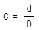
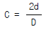
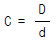
(정답률: 55%)
42. 1/100의 기울기를 가진 2개의 키이를 1쌍으로 하여 사용하는 키이는?
- 원뿔키이
- 둥근키이
- 접선키이
- 미끄럼키이
(정답률: 62%)
43. Hydro-forming(하이드로 포밍)가공을 하기 위한 다이의 재료로 가장 많이 사용되는 것은?
- 담금질 처리된 STC
- 풀림 처리된 SKH
- 방사상으로 분할된 STS
- 유압으로 지지된 고무막
(정답률: 40%)
44. 금형용 합성수지의 재료가 아닌 것은?
- 에폭시수지
- 불소수지
- 페놀수지
- 에틸셀룰로스
(정답률: 41%)
45. 알루미늄-규소계 합금으로 10∼14% Si가 포함된 것으로 주조성은 좋으나 절삭성이 좋지 않은 합금은?
- 라우탈
- 실루민
- 알민
- 하이드로날륨
(정답률: 60%)
46. 펀치와 다이에 압축하중을 주어서 소성변형을 시키는 냉간단조의 종류에 속하지 않는 것은?
- 압출(extrusion)
- 압축가공(up-setting)
- 압인가공(coining)
- 엠보싱(embossing)
(정답률: 72%)
47. 다음 중 주철의 장점이 아닌 것은?
- 마찰저항이 우수하다.
- 절삭가공이 쉽다.
- 주조성이 우수하다.
- 압축강도가 작다.
(정답률: 77%)
48. 다음 중 가장 큰 회전력을 전달할 수 있는 키이는?
- 안장 키이
- 평 키이
- 묻힘 키이
- 스플라인
(정답률: 70%)
49. 기어의 잇면, 크랭크축 머리부, 고급 내연 기관의 실린더내면, 게이지 블록 등에 0.3∼0.7㎜ 정도의 깊이로 처리하는 표면 경화법은?
- 액체 침탄법
- 질화법
- 고주파 경화법
- 화염 경화법
(정답률: 46%)
50. 공작기계의 고속 능률화에 따라 생산성을 높이고 가공 재료의 피절삭성, 제품의 정밀도 및 절삭공구의 수명 등을 향상하기 위하여 탄소강에 S, Pb, P, Mn을 첨가한 강은?
- 표면경화용강
- 침탄용강
- 질화용강
- 쾌삭강
(정답률: 79%)
51. 다음 보기의 도면에서 A ‾ D의 선의 용도에 의한 명칭 중 틀린 것은?
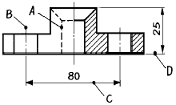
- A : 숨은선
- B : 중심선
- C : 치수선
- D : 지시선
(정답률: 82%)
52. 일반적인 도면의 표제란 위치로 가장 적당한 것은?
- 오른쪽 중앙
- 오른쪽 위
- 오른쪽 아래
- 왼쪽 아래
(정답률: 90%)
53. 다음 도면에서 (10)의 치수에서 ( ) 가 뜻하는 것은?
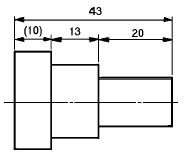
- 참고치수
- 소재치수
- 중요치수
- 비례척이 아닌 치수
(정답률: 85%)
54. 끼워맞춤에서 공차(公差,tolerance)란?
- 최대 허용 치수에서 최소 허용치수를 뺀 수치
- 최대허용치수에서 기준치수를 뺀 수치
- 기준치수에서 최소허용치수를 뺀 수치
- 실제치수에서 기준치수를 뺀 수치
(정답률: 77%)
55. 표면의 결 지시기호가
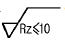
일 경우 올바른 해독은?- 최대 높이 거칠기가 10mm 이하
- 최대 높이 거칠기가 10㎛ 이하
- 십점 평균 거칠기가 10mm 이하
- 십점 평균 거칠기가 10㎛ 이하
(정답률: 48%)
56. 테이퍼값이 1/20 인 보기와 같은 그림에서 X 의 값은 얼마인가? (보기)
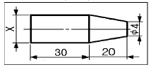
- φ5
- φ6
- φ8
- φ10
(정답률: 53%)
57. 보기와 같이 3각법으로 투상한 정면도와 평면도에 가장 적합한 우측면도는?
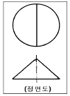
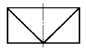
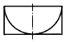
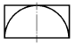
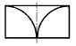
(정답률: 62%)
58. 보기 입체도의 화살표 방향 투상도면으로 적합한 것은?
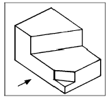
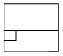
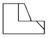
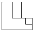
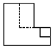
(정답률: 83%)
59. 그림과 같은 손잡이를 스케치 하려고 할 때 다음 중 가장 적합한 방법은?
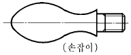
- 간접 모양뜨기
- 직접 모양뜨기
- 프린트법
- 사진 스케치법
(정답률: 49%)
60. 탄소 주강품을 나타내는 재료 기호는?
- GC
- SC
- SF
- GCD
(정답률: 62%)
분할다이는 큰 금형을 여러 개의 작은 금형으로 분할하여 생산하는 방법입니다. 따라서 금형이 간소화되어 작게 만들 수 있다는 것은 분할다이의 핵심 아이디어 중 하나입니다. 따라서 이 보기는 분할다이의 장점과 밀접한 관련이 있습니다. 다른 보기들도 분할다이의 장점과 관련이 있지만, "금형이 간소화되므로 작게 만들 수 있다"는 내용은 분할다이의 장점과 가장 밀접한 관련이 있습니다.